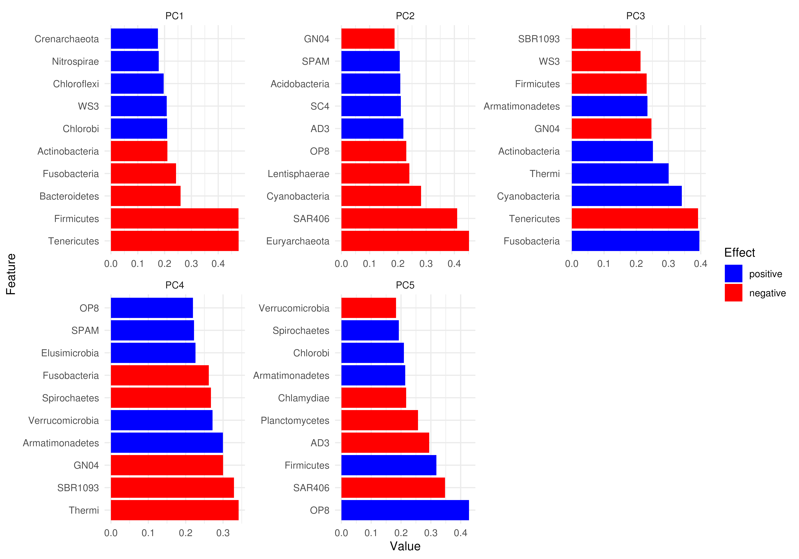
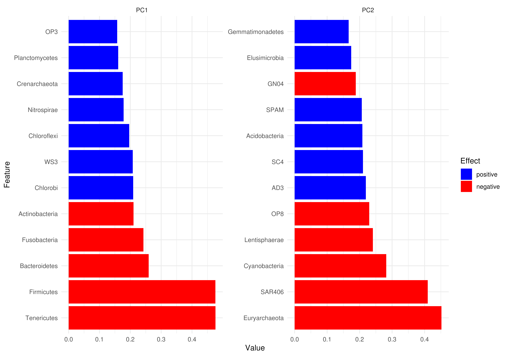

plotLoadings.RdThis function is used after performing a reduction method. If TreeSE
is given it retrieves the feature loadings matrix to plot values.
A tree from rowTree can be added to heatmap layout.
plotLoadings(x, ...)
# S4 method for class 'TreeSummarizedExperiment'
plotLoadings(
x,
dimred,
layout = "barplot",
ncomponents = 5,
tree.name = "phylo",
row.var = NULL,
add.tree = FALSE,
...
)
# S4 method for class 'SingleCellExperiment'
plotLoadings(x, dimred, layout = "barplot", ncomponents = 5, ...)
# S4 method for class 'matrix'
plotLoadings(x, layout = "barplot", ncomponents = 5, ...)additional parameters for plotting.
n: Integer scalar. Number of features to be plotted.
Applicable when layout="barplot". (Default: 10))
Character scalar. Determines the reduced dimension to
plot.
Character scalar. Determines the layout of plot. Must be
either "barplot" or "heatmap". (Default: "barplot")
Numeric scalar. Number of components must be lower
or equal to the number of components chosen in the reduction method.
(Default: 5)
Character scalar. Specifies a rowTree/colTree from
x. (Default: tree.name = "phylo")
NULL or Character scalar. Specifies a
variable from rowData to plot with tree heatmap layout.
(Default: NULL)
Logical scalar. Whether to add tree to heatmap layout.
(Default: FALSE)
A ggplot2 object.
These method visualize feature loadings of dimension reduction results.
Inspired by the plotASVcircular method using phyloseq.
TreeSummarizedExperiment object is expected to have
content in reducedDim slot calculated with standardized methods from
mia or scater package.
library(mia)
library(scater)
data("GlobalPatterns", package = "mia")
tse <- GlobalPatterns
# Calculate PCA
tse <- agglomerateByPrevalence(tse, rank="Phylum", update.tree = TRUE)
tse <- transformAssay(tse, method = "clr", pseudocount = 1)
tse <- runPCA(tse, ncomponents = 5, assay.type = "clr")
#' # Plotting feature loadings with tree
plotLoadings(tse, dimred = "PCA", layout = "heatmap", add.tree = TRUE)
#> ! # Invaild edge matrix for <phylo>. A <tbl_df> is returned.
#> ! # Invaild edge matrix for <phylo>. A <tbl_df> is returned.
#> ℹ invalid tbl_tree object. Missing column: label.
#> ℹ invalid tbl_tree object. Missing column: label.
#> ! # Invaild edge matrix for <phylo>. A <tbl_df> is returned.
#> ! # Invaild edge matrix for <phylo>. A <tbl_df> is returned.
#> Scale for fill is already present.
#> Adding another scale for fill, which will replace the existing scale.
#> ! # Invaild edge matrix for <phylo>. A <tbl_df> is returned.
#> ! # Invaild edge matrix for <phylo>. A <tbl_df> is returned.
#> ℹ invalid tbl_tree object. Missing column: label.
#> ℹ invalid tbl_tree object. Missing column: label.
#> ! # Invaild edge matrix for <phylo>. A <tbl_df> is returned.
#> ! # Invaild edge matrix for <phylo>. A <tbl_df> is returned.
#> Scale for fill is already present.
#> Adding another scale for fill, which will replace the existing scale.
# Plotting matrix as a barplot
loadings_matrix <- attr(reducedDim(tse, "PCA"), "rotation")
plotLoadings(loadings_matrix)

# Plotting more features but less components
plotLoadings(tse, dimred = "PCA", ncomponents = 2, n = 12)

# Plotting matrix as heatmap without tree
plotLoadings(loadings_matrix, layout = "heatmap")
# Plot with less components
plotLoadings(tse, "PCA", layout = "heatmap", ncomponents = 2)